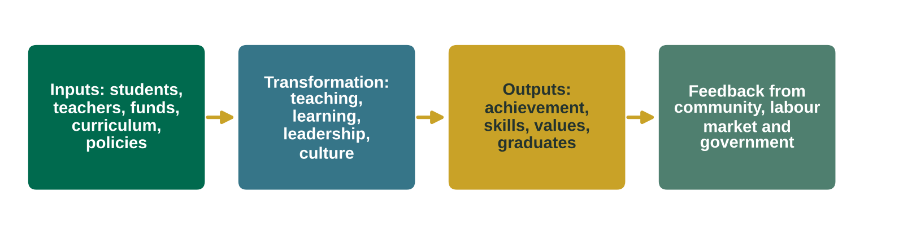
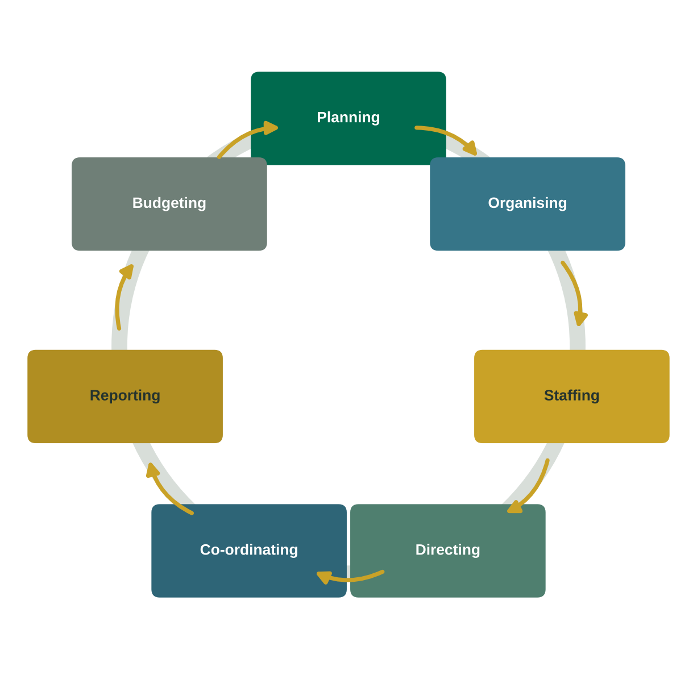

PC 118 Organisation and Management of Educational Institutions
Organisation theory, management structures, leadership, curricular and co-curricular management, funds and resources
Contents
- Unit 1: Organisation as a Social System
- Unit 2: Management Structure of Educational Institutions
- Unit 3: The Role of Heads as Leaders in Educational Institutions
- Unit 4: Management of Curricular and Co-curricular Activities
- Unit 5: Management of School Funds and Other Resources
- Unit 6: Practicum
- Reading List
- Exam Preparation Bank
- References
About this course
Schools, colleges and universities are organisations: they have goals, structures, people, cultures and resources that must be managed. This course applies organisation and management theory to educational institutions in Bangladesh. It covers organisations as social systems, the administrative and management structures of the education sector (ministries, directorates and governing bodies such as SMCs and GBs), the head of the institution as leader and decision-maker (including in emergencies), the management of curricular and co-curricular activities, and financial and physical resource management, ending with institutional planning and a practicum.
Course objectives
Explain the concept, types and functions of organisations and the school as a social system.
Describe the processes, functions, principles and styles of educational management and the management structures of Bangladesh.
Analyse the role of institutional heads as leaders, decision-makers and crisis managers.
Plan the management of curricular and co-curricular activities, finances and physical facilities.
Each unit follows the official syllabus order. Read the narrative first, then the Key point boxes, then test yourself with the Exam focus questions.
Golden boxes = must-remember ideas. Teal boxes = definitions and study tips. Green boxes = Bangladesh context.
The final chapter is a question bank (MCQs with answers, short and broad questions) in the style of university examinations, followed by full references in APA 7th style.
Statistics on enrolment, budgets and policies change every year. Before an exam, check the latest BANBEIS, DPE, UGC and UNESCO figures.
Unit 1: Organisation as a Social System
Chapter summary
Organisation also refers to the process of organising : dividing work, grouping activities, assigning authority and responsibility, and establishing relationships so that people work together towards goals.
This chapter covers: Meaning, concept, types and functions of organisation; Organisation as a social system; Organisation versus institution; The educational institution as a social organisation.
Key terms:
- Organisation : "A social unit (or human grouping) deliberately constructed and reconstructed to seek specific goals" (Etzioni, 1964).
Key points to remember:
- Weick's "loosely coupled systems" explains why a policy announced at the ministry may change little in classrooms: units are connected but retain independence.
What the curriculum saysUnit 1: Organisation as Social System · 5 contact hours
At the end of this unit learners will be able to
- explain organisation as a social system
- justify educational institutions as social organisations
- differentiate identities of social organisation and institution and explain their functions
- Meaning, concept, types and functions of organisation
- Organisation as social system
- Organisation vs institution and their characteristics
- Educational institution as social organisation
1.1 Meaning, concept, types and functions of organisation
Organisation: "A social unit (or human grouping) deliberately constructed and reconstructed to seek specific goals" (Etzioni, 1964). Barnard (1938) defined it as "a system of consciously coordinated activities or forces of two or more persons."
Organisation also refers to the process of organising: dividing work, grouping activities, assigning authority and responsibility, and establishing relationships so that people work together towards goals.
Elements: goals; people; structure (roles, hierarchy, rules); technology (methods of work); environment; and culture.
Types of organisation:
| Basis | Types |
|---|---|
| Structure | Formal (deliberately designed with official hierarchy and rules) and informal (spontaneous networks of personal relationships within formal organisations) |
| Authority pattern | Line (direct chain of command), line and staff (line managers advised by specialists), functional (specialists direct their function across units), matrix (dual reporting, project and function), committee |
| Ownership / purpose (Blau & Scott, 1962: cui bono, "who benefits?") | Mutual-benefit (unions), business (firms), service (schools, hospitals: clients benefit), commonweal (police, army: the public benefits) |
| Compliance (Etzioni, 1961) | Coercive (prisons), utilitarian (business), normative (schools, religious bodies) |
Functions of organisation: clarifying goals; dividing labour and specialising; establishing authority and accountability; coordinating; facilitating communication; using resources efficiently; providing stability and growth.
1.2 Organisation as a social system
A social system is a set of interrelated parts (people, roles, groups) that interact to achieve goals within an environment. Open systems theory (Katz & Kahn, 1966) treats schools as open systems that take inputs (students, teachers, funds, curriculum), transform them through processes (teaching, learning, management), and produce outputs (educated graduates), with feedback from the environment.

Figure 1. The school as an open system
The Getzels–Guba model (1957)
Getzels and Guba described social behaviour in an organisation as a function of two dimensions:
Nomothetic (institutional) dimension: institution → roles → expectations.
Idiographic (personal) dimension: individual → personality → need-dispositions.
Behaviour (B) = f(R × P), the interaction of role and personality. Effective administrators balance institutional expectations with individual needs; conflict arises when the two clash. Later versions added the cultural dimension (ethos, values).

Figure 2. Getzels and Guba's social systems model
1.3 Organisation versus institution
| Basis | Organisation | Institution |
|---|---|---|
| Nature | A deliberately structured group of people pursuing goals | An established, enduring pattern of norms, values and practices that society regards as important |
| Example | A particular school, the DSHE | Education, family, religion, marriage |
| Formation | Created deliberately | Evolves over time |
| Concreteness | Concrete, with members, buildings, budgets | Abstract, a system of norms |
| Change | Can be reorganised quickly | Changes slowly |
Selznick (1957) noted that an organisation becomes an institution when it is "infused with value beyond the technical requirements of the task at hand". A school is both: an organisation (a structured unit) and part of the institution of education.
1.4 The educational institution as a social organisation
Schools have distinctive features as organisations:
Goals are multiple, complex and sometimes ambiguous (academic, social, moral).
The "raw material" (students) is human, varied and participates in the process.
The core technology (teaching) is uncertain and hard to standardise.
Teachers are professionals with considerable classroom autonomy, so schools are loosely coupled systems (Weick, 1976).
Schools depend heavily on their environment (parents, community, government).
Schools have a strong culture and climate (Hoy & Miskel, 2013) that shape effectiveness.
Weick's "loosely coupled systems" explains why a policy announced at the ministry may change little in classrooms: units are connected but retain independence. Good school leaders strengthen coupling around teaching and learning (instructional leadership) while respecting professional autonomy.
Unit 2: Management Structure of Educational Institutions
Chapter summary
Fayol's 14 principles remain the classic reference: division of work, authority and responsibility, discipline, unity of command, unity of direction, subordination of individual to general interest, remuneration, centralisation, scalar chain, order, equity, stability of tenure, initiative and esprit de corps.
This chapter covers: Administration, management and educational administration; Process and functions of management; Principles of management; Theories underpinning management; Management styles; Types of administrative structure; Ministries and line directorates in Bangladesh; Management of educational institutions.
What the curriculum saysUnit 2: Management Structure of Educational Institutions · 10 contact hours
At the end of this unit learners will be able to
- explain the concept of educational administration and management
- describe the principles, styles and process of management in educational institutions
- identify the administrative structure in different levels in education
- explain power and functions of different ministries in education and draw organograms
- review the roles of management committees of educational institutions
- Concept of administration and management, educational administration
- Process, functions, principles and styles of management
- Types of administrative and management structure of educational institutions
- Functions and responsibilities of the Ministries of Education and line Directorates
- Management of educational institutions: E-management, Committees, SMCs, CMCs, MMCs, GBs
2.1 Administration, management and educational administration
Administration is concerned with determining policy, goals and overall direction; it is a higher-level, thinking function.
Management is concerned with executing policies, organising resources and directing people to achieve goals; it is a doing function.
In education the terms overlap. Educational administration is "the process of integrating the efforts of personnel and of utilising appropriate materials in such a way as to promote effectively the development of human qualities" (Campbell et al.). Educational management is used increasingly in Britain and Commonwealth countries (Bush, 2020).
| Basis | Administration | Management |
|---|---|---|
| Function | Policy formulation, goal setting | Implementation of policy |
| Level | Top level | Middle and lower levels |
| Nature | Determinative | Executive |
| Focus | What and why | How |
| Example | Ministry of Education | Head teacher, DEO |
2.2 Process and functions of management
| Theorist | Functions |
|---|---|
| Henri Fayol (1916) | POCCC: Planning, Organising, Commanding, Coordinating, Controlling |
| Luther Gulick (1937) | POSDCORB: Planning, Organising, Staffing, Directing, Co-ordinating, Reporting, Budgeting |
| Modern synthesis | Planning, organising, staffing, leading (directing, motivating, communicating), controlling (monitoring, evaluation) |

Figure 3. The management process (Gulick's POSDCORB)
2.3 Principles of management
Fayol's 14 principles remain the classic reference: division of work, authority and responsibility, discipline, unity of command, unity of direction, subordination of individual to general interest, remuneration, centralisation, scalar chain, order, equity, stability of tenure, initiative and esprit de corps.
Principles specific to educational management: democratic participation; child-centredness; professional autonomy of teachers; equity and inclusion; accountability and transparency; flexibility; cooperation with the community; and continuous improvement.
2.4 Theories underpinning management
Classical: scientific management (Taylor, 1911), administrative management (Fayol), bureaucracy (Weber: hierarchy, rules, impersonality, merit, specialisation).
Human relations: Elton Mayo's Hawthorne studies (1920s–30s) showed the importance of social and psychological factors; McGregor's Theory X (people dislike work and must be controlled) and Theory Y (people seek responsibility and self-direction) (1960).
Behavioural science / systems: Barnard, Simon, Getzels–Guba, open systems theory.
Contemporary: total quality management (Deming), learning organisations (Senge, 1990), distributed leadership, school-based management.
2.5 Management styles
| Style | Features | Effect |
|---|---|---|
| Autocratic / authoritarian | Head decides alone; strict control | Quick decisions; low morale and creativity |
| Democratic / participative | Decisions shared with staff | High morale and commitment; slower |
| Laissez-faire | Minimal direction; freedom to staff | Works with highly competent staff; otherwise chaos |
| Bureaucratic | Follows rules strictly | Consistency; rigidity |
| Paternalistic | Head acts as a caring parent | Loyalty; dependency |
Lewin, Lippitt and White (1939) found that democratic leadership produced the most positive group climate and sustained productivity among children's clubs.
2.6 Types of administrative structure
Centralised: decisions made at the top (national level). Bangladesh's education system is largely centralised: curriculum, textbooks, examinations, MPO and recruitment rules are national.
Decentralised: authority delegated to regions, districts or schools; school-based management (SBM) gives schools authority over budgets, staffing and planning (Caldwell & Spinks, 1988).
Line, line-and-staff, functional and committee structures within institutions.
2.7 Ministries and line directorates in Bangladesh

Figure 4. Main bodies in the governance of education in Bangladesh
| Body | Main functions |
|---|---|
| Ministry of Primary and Mass Education (MoPME) | Policy, planning and finance for pre-primary, primary and non-formal education |
| Directorate of Primary Education (DPE) | Implementing primary programmes, teacher recruitment and training, stipends, monitoring |
| Bureau of Non-Formal Education (BNFE) | Literacy, second-chance and lifelong learning programmes |
| Ministry of Education (MoE) | Policy for secondary, higher, madrasah and technical education, through SHED and TMED |
| DSHE | Administration of secondary and higher secondary schools and colleges, MPO, inspections, projects |
| Directorate of Madrasah Education | Administration of Alia madrasahs |
| Directorate of Technical Education (DTE) | Polytechnics, TSCs, TVET teacher training |
| NCTB | Curriculum and textbooks |
| BANBEIS | Educational statistics and the Education Management Information System (EMIS) |
| NAEM | Training of education managers and teachers |
| DIA | Inspection and audit of non-government institutions |
| Education boards | Registration, public examinations, recognition of institutions, rules for managing committees |
| UGC | Higher education planning, funding and quality |
2.8 Management of educational institutions
E-management: digital systems for administration and data, such as EMIS (BANBEIS), the IPEMIS (Integrated Primary Education Management Information System of DPE), online admission and result systems, e-MPO, the Teachers' Portal and online attendance. Benefits: transparency, speed, data-based decisions. Challenges: connectivity, skills, data security.
School Management Committee (SMC): for primary schools under DPE guidelines; members include the head teacher (member-secretary), parents, teachers, donors and local representatives. Functions: school development planning (SLIP), monitoring attendance and learning, mobilising community resources, overseeing facilities.
Managing Committee (MC) / School Managing Committee: for non-government secondary schools under education board regulations (the 2009 regulations, as amended): approves budgets, appoints staff (subject to NTRCA rules), supervises finances.
College Managing Committee (CMC) / Governing Body (GB): for non-government colleges, with similar functions under the National University or board regulations.
Madrasah Managing Committee (MMC): for non-government madrasahs under the Madrasah Education Board.
Government institutions are managed directly by the directorates, often with advisory committees.
Persistent issues with managing committees in Bangladesh include political influence, irregular recruitment, weak financial accountability and limited parental voice. Reform proposals include training members, transparent elections, e-procurement and stronger oversight by boards and DIA.
Unit 3: The Role of Heads as Leaders in Educational Institutions
Chapter summary
Educational institutions are responsible for: delivering the curriculum and ensuring learning; holistic development of students; safety and wellbeing; inclusion; professional development of staff; partnership with parents and community; transparent use of resources; compliance with policies; and continuous improvement.
This chapter covers: Roles and responsibilities of the institution; The head as leader and decision-maker; Role of heads in emergencies; Meaning, concept and styles of leadership; Attributes of a successful leader; Human relations in schools and colleges.
Key terms:
- Leadership : "A process whereby an individual influences a group of individuals to achieve a common goal" (Northouse, 2021).
Key points to remember:
- Leithwood, Harris and Hopkins (2008), Seven strong claims about successful school leadership : school leadership is second only to classroom teaching as an influence on pupil learning; almost all successful leaders draw on the same basic practices (building vision and setting directions, understanding and developing…
What the curriculum saysUnit 3: Role of Heads as Leaders in Educational Institutions · 10 contact hours
At the end of this unit learners will be able to
- define concept and styles of leadership
- identify skills and attributes of successful leaders
- explain roles and responsibilities of head as leaders and decision makers
- describe roles of institutional heads in emergencies
- demonstrate skills in building human relations and apply as practice for school development
- apply leadership skills for school success
- Roles and responsibilities of the institutions
- Role of head as leader and decision maker
- Role of institutional heads in emergencies (Disaster, Pandemic, Post-pandemic & others)
- Meaning and concept and styles of leadership
- Attributes of a successful leader
- Human relations in schools and colleges: staff, pupil, community, parent and government officers
3.1 Roles and responsibilities of the institution
Educational institutions are responsible for: delivering the curriculum and ensuring learning; holistic development of students; safety and wellbeing; inclusion; professional development of staff; partnership with parents and community; transparent use of resources; compliance with policies; and continuous improvement.
3.2 The head as leader and decision-maker
The head teacher, principal or vice-chancellor is the chief executive, instructional leader and public face of the institution. Main roles:
Visionary: sets a clear vision, mission and goals.
Instructional leader: supervises teaching, supports curriculum implementation, monitors learning outcomes (Hallinger & Murphy, 1985).
Manager and administrator: organises timetable, staff, finance, facilities and records.
Human resource developer: recruits, motivates, mentors and develops staff.
Decision-maker and problem-solver.
Communicator and public relations officer.
Change agent: leads innovations such as new curricula and ICT.
Guardian of discipline and culture.
Decision-making models
| Model | Description |
|---|---|
| Rational (classical) | Identify problem → generate alternatives → evaluate → choose optimal → implement → evaluate |
| Bounded rationality (Simon, 1947) | Decision-makers "satisfice" (choose a satisfactory option) because of limited information and time |
| Incremental (Lindblom, 1959) | "Muddling through" with small, successive changes |
| Participative / shared | Involving stakeholders improves acceptance and quality (Vroom–Yetton model on when to involve others) |
| Garbage can (Cohen, March & Olsen, 1972) | In "organised anarchies" like universities, problems, solutions and participants meet somewhat randomly |

Figure 5. The rational decision-making process
3.3 Role of heads in emergencies
Emergencies include natural disasters (floods, cyclones, earthquakes), pandemics (COVID-19), fires, violence and political unrest. The head's role spans the disaster management cycle:

Figure 6. The head's role across the emergency management cycle
Disaster: school disaster management committees, evacuation drills, safe shelters (many schools serve as cyclone shelters), keeping records safe, protecting children.
Pandemic (COVID-19): organising remote learning (TV, radio, online, worksheets), maintaining contact with students, supporting teachers, safe reopening with health protocols, managing learning loss through remedial programmes and assessment.
Post-pandemic: learning recovery (Teaching at the Right Level, accelerated curricula), mental health support, re-enrolling dropouts (particularly girls who married and boys who joined work), and building resilience and blended-learning capacity.
Other emergencies: violence or unrest on campus, fires and accidents, and individual crises such as the death of a student.
The Comprehensive School Safety Framework (GADRRRES, 2017; updated 2022) sets out three pillars: safe learning facilities, school disaster management, and risk reduction and resilience education.
3.4 Meaning, concept and styles of leadership
Leadership: "A process whereby an individual influences a group of individuals to achieve a common goal" (Northouse, 2021).
Leadership is distinct from management: Bennis and Nanus (1985) said "managers are people who do things right and leaders are people who do the right thing."
Major leadership theories
| Theory | Key idea |
|---|---|
| Trait theory | Leaders have innate traits (intelligence, self-confidence, integrity) |
| Behavioural theories | Ohio State (initiating structure and consideration); Michigan (job-centred and employee-centred); Blake and Mouton's Managerial Grid (concern for people × concern for production: impoverished, country club, task, middle-of-the-road, team) |
| Contingency / situational | Fiedler's contingency model; Hersey and Blanchard's situational leadership (telling, selling, participating, delegating according to follower readiness); path–goal theory |
| Transactional leadership | Exchange of rewards for performance (Burns, 1978) |
| Transformational leadership | Inspires followers to transcend self-interest. Bass's "4 Is": idealised influence, inspirational motivation, intellectual stimulation, individualised consideration |
| Instructional leadership | Focus on improving teaching and learning (Hallinger) |
| Distributed leadership | Leadership spread across many people and roles (Spillane, 2006; Harris, 2008) |
| Servant leadership | Leader serves followers' growth first (Greenleaf, 1977) |
| Moral / ethical leadership | Leadership grounded in values and moral purpose (Sergiovanni, 1992; Fullan) |

Figure 7. Hersey and Blanchard's situational leadership styles
Leithwood, Harris and Hopkins (2008), Seven strong claims about successful school leadership: school leadership is second only to classroom teaching as an influence on pupil learning; almost all successful leaders draw on the same basic practices (building vision and setting directions, understanding and developing people, redesigning the organisation, managing the teaching and learning programme); leadership has a greater influence when it is widely distributed.
3.5 Attributes of a successful leader
Vision; integrity and fairness; communication skills; emotional intelligence; decisiveness; knowledge of curriculum and pedagogy; ability to build teams; empathy; resilience; commitment to learning; problem-solving; and the ability to manage change (Fullan, 2001).
3.6 Human relations in schools and colleges
| Relationship | Good practices |
|---|---|
| Head–staff | Respect, participation in decisions, recognition, fair workload, professional development, open communication, conflict resolution |
| Head/teacher–pupil | Caring, fairness, listening to student voice (student councils), safe environment, guidance |
| School–community | Involving the community in SMCs, using local resources, community service, open days |
| School–parent | Regular communication, parent–teacher meetings, home visits, involving parents in learning (Epstein's six types of involvement: parenting, communicating, volunteering, learning at home, decision-making, collaborating with the community) |
| School–government officers | Timely reporting, cooperation with inspectors and education officers, using supervision for improvement |
Unit 4: Management of Curricular and Co-curricular Activities
Chapter summary
A time-table is the instrument that translates the curriculum into the daily and weekly schedule of the school. It is the "mirror of the school" and the "second school clock".
This chapter covers: Time-table management; Academic supervision; Staff development programmes; Management of examinations and evaluation; Library services management; Management of co-curricular activities.
Key terms:
- Supervision : The process of helping, guiding, advising and stimulating teachers to improve the quality of teaching and learning.
What the curriculum saysUnit 4: Management of Curricular and Co-Curricular Activities · 6 contact hours
At the end of this unit learners will be able to
- identify the role of management in curricular and co-curricular activities
- apply skills in organising and managing curricular and co-curricular activities
- develop and apply skills in management of academic calendar, exams and evaluation, and library services
- Time-table management, academic supervision, staff development program
- Management of examination and evaluation
- Library services management
- Management of co-curricular activities
4.1 Time-table management
A time-table is the instrument that translates the curriculum into the daily and weekly schedule of the school. It is the "mirror of the school" and the "second school clock".
Principles of time-table construction:
Follow government and board rules on subject periods and total hours.
Place difficult subjects (Mathematics, Science, English) in early periods when attention is high (fatigue principle).
Provide variety and alternate heavy and light subjects.
Allocate time according to the importance and difficulty of subjects.
Distribute workload fairly among teachers.
Use facilities (laboratory, library, playground) efficiently.
Include co-curricular activities and breaks.
Be flexible to accommodate special events.
Consider single- or double-shift arrangements.
Types: master (consolidated) time-table, class-wise, teacher-wise, vacant-period (substitution) chart, and co-curricular time-table. Software tools (aSc Timetables, FET) can help.
4.2 Academic supervision
Supervision: The process of helping, guiding, advising and stimulating teachers to improve the quality of teaching and learning. Modern supervision is developmental and collegial, not fault-finding inspection.
| Inspection (traditional) | Supervision (modern) |
|---|---|
| Fault-finding | Improvement-oriented |
| Authoritarian | Democratic, cooperative |
| Focus on rules and records | Focus on teaching and learning |
| One-way, judgemental | Two-way, supportive |
| Occasional | Continuous |
Models: clinical supervision (Goldhammer, Cogan): pre-observation conference → observation → analysis → post-observation conference → critique of the process; developmental supervision (Glickman); peer coaching; lesson study (Japan). In Bangladesh, academic supervision is carried out by heads, Upazila Academic Supervisors, AUEOs and DSHE officials, often with standardised observation forms.
4.3 Staff development programmes
Continuous professional development (CPD) through induction, in-service training (NAEM, TTCs, URCs), subject-based training, workshops, peer observation, professional learning communities (PLCs), mentoring, action research, conferences and online courses (Muktopaath). Effective CPD is sustained, collaborative, focused on subject content and student learning, and includes practice with feedback (Darling-Hammond et al., 2017).
4.4 Management of examinations and evaluation
Plan an assessment calendar; form an examination committee; set questions according to a table of specification and moderate them; maintain security of papers; arrange seating and invigilation; ensure fair marking with marking schemes; tabulate results accurately and confidentially; analyse results to improve teaching; communicate results to students and parents; keep records; and prevent malpractice. Continuous assessment records should be maintained throughout the year.
4.5 Library services management
Functions: support curriculum, encourage reading habits, provide reference and research resources, promote self-directed learning.
Management: an appropriate room with seating and lighting; trained librarian; selection and acquisition policy; classification (Dewey Decimal Classification) and cataloguing; circulation system (issue and return, ideally digital); reading programmes; book clubs; digital resources and e-library.
S. R. Ranganathan's five laws of library science (1931): books are for use; every reader his/her book; every book its reader; save the time of the reader; the library is a growing organism.
4.6 Management of co-curricular activities
Co-curricular activities (CCAs) include literary (debate, essay writing, wall magazines), cultural (music, drama, dance), physical (sports, games), social service (scouts, Girl Guides, Red Crescent, BNCC), scientific (science fairs, clubs) and national day celebrations.
Principles: linked with curricular objectives; participation of all students; a balanced variety; teacher guidance; proper scheduling in the time-table; adequate budget; record-keeping and recognition; student leadership.
Values: develop leadership, cooperation, creativity, discipline, physical health, citizenship and talent.
Unit 5: Management of School Funds and Other Resources
Chapter summary
Sources of income: government grants (salary through MPO; development funds; SLIP grants for primary schools), tuition and session fees, examination fees, donations and endowments, community contributions, rent of facilities, and income-generating activities.
This chapter covers: Budget; Maintenance of accounts and audit; Institutional plant facilities; School improvement programmes: institutional planning; SWOT analysis for institutional planning.
Key terms:
- Budget : A financial plan that estimates income and expenditure for a specific period (usually a fiscal year) to achieve the institution's goals.
What the curriculum saysUnit 5: Management of School Funds & Other Resources · 5 contact hours
At the end of this unit learners will be able to
- understand the financial management/budget in educational institutions
- describe importance of institutional plant facilities
- apply gained knowledge and skills in effective management of plant facilities
- prepare an institutional plan for school improvement programs
- Budget, maintenance of accounts and audit
- Institutional plant facilities (site, building, furniture, equipment’s library, laboratory, workshop,
- School improvement programs: Institutional planning
5.1 Budget
Budget: A financial plan that estimates income and expenditure for a specific period (usually a fiscal year) to achieve the institution's goals.
Sources of income: government grants (salary through MPO; development funds; SLIP grants for primary schools), tuition and session fees, examination fees, donations and endowments, community contributions, rent of facilities, and income-generating activities.
Expenditure heads: salaries; maintenance and repair; teaching materials; library and laboratory; co-curricular activities; utilities; examinations; welfare and stipends; contingencies.
Budget preparation process: review past budgets → estimate income → estimate expenditure by priorities → consult staff and committee → approval by SMC/MC/GB → implementation → monitoring and revision.
Principles: balance, realism, priority to learning, flexibility, participation and transparency.
5.2 Maintenance of accounts and audit
Accounts: cash book, ledger, receipt and payment registers, fee register, stock register, salary register and bank reconciliation. All transactions should be through bank accounts with joint signatories, and vouchers kept for every expense.
Audit: an independent examination of financial records to verify accuracy and compliance.
Internal audit: by the institution's own committee, continuous.
External audit: by DIA (Directorate of Inspection and Audit) for non-government institutions, by the Comptroller and Auditor General's office for government funds, and by chartered accountants.
Purposes: prevent fraud and misuse, ensure compliance, build public trust and improve financial management.
5.3 Institutional plant facilities
| Facility | Management considerations |
|---|---|
| Site | Safe, accessible, healthy location; adequate area; away from noise and hazards; flood safety |
| Building | Adequate classrooms (about 1 m² per student minimum), ventilation, light, earthquake resistance, accessibility (ramps), separate toilets for girls, WASH facilities |
| Furniture | Appropriate size for age, flexible for group work, durable |
| Equipment | Teaching aids, ICT equipment, inventory and maintenance |
| Library | See Unit 4.5 |
| Laboratory | Safety rules, equipment registers, chemical storage, first aid, trained assistants |
| Workshop | For TVET and practical subjects; safety equipment |
| Playground and recreation | Adequate space, maintenance, sports equipment, shade |
Plant management: a facilities committee, regular inspection, preventive maintenance, stock registers, cleanliness campaigns, involvement of students (e.g. tree planting), and use of facilities for community purposes.
5.4 School improvement programmes: institutional planning
Institutional planning is a programme of development prepared by an educational institution, based on its own needs and resources, for the improvement of the institution and its educational programme. It is bottom-up planning that complements national plans.
 planning cycle")
Figure 8. The institutional (school development) planning cycle
Areas of institutional planning: academic programmes (results improvement, remedial teaching), co-curricular programmes, physical development (buildings, furniture), staff development, community relations and student welfare.
Bangladesh example: SLIP and UPEP. Under PEDP, each government primary school prepares a School Level Improvement Plan (SLIP) with the SMC and community, receiving an annual grant to implement priorities; Upazila Primary Education Plans (UPEPs) aggregate local priorities.
5.5 SWOT analysis for institutional planning

Figure 9. SWOT analysis as a tool for school self-evaluation
Unit 6: Practicum
Chapter summary
The practicum allows students to apply the course content in real institutions. Suggested activities (each producing a short report or portfolio entry):
What the curriculum saysUnit 6: Practicum · 4 contact hours
- Development of an institutional plan
- Sketch out academic calendar, school routine
- Case-study, role-playing
The practicum allows students to apply the course content in real institutions. Suggested activities (each producing a short report or portfolio entry):
Organisational study of a school: draw its organisational chart, identify formal and informal structures, describe its management committee.
Time-table analysis: evaluate a school's time-table against the principles in Unit 4.1 and suggest improvements.
Leadership interview: interview a head teacher on leadership style, decision-making and emergency management (e.g. COVID-19 experience).
Budget study: analyse a school's annual budget and accounts procedures.
Facilities audit: assess buildings, WASH, library, laboratory and accessibility using a checklist.
Institutional plan: prepare a one-year school improvement plan based on a SWOT analysis.
Co-curricular plan: design an annual co-curricular calendar.
To link theory with practice, try a mini-project with classmates: visit a local school, prepare a SWOT analysis and a one-year institutional plan, and ask the head teacher for feedback. Citing such an example strengthens any exam answer on school management.
Reading List
Recommended in the curriculum
Books, journals and reports listed in the official course curriculum, as given there.
- Aggarwal, J.C. (1994). Educational administration, management and supervision. Arya Book.
- Arlestig, H., Day, C., & Johansson, O. (2016). A decade of research on school principals: Cases from 24 countries. Springer.
- Bennett, N., Crawford, M., & Cartwright, M. (eds.). (2002). Effective educational leadership.SAGE.
- Bhatt, B. D., & Sharma, S.R. (1992). Educational administration: Emerging trends. Kanishkha.
- Bottesy, M. (1992). The ethics of educational management. Cassell.
- Bush, T., Bell, L., & Middlewood, D. (2010). The principles of educational leadership and management. Sage.
- Everard, K. B., Morris, G., & Wilson, I. (2004). Effective school management. Sage.
- Handy C.S. & Aitken R. (1986). Understanding school as organization, Penguin.
- Harris, A., Day, C., Hopkins, D., Hadfield, M., Hargreaves, A., & Chapman, C. (2013). Effective leadership for school improvement. Routledge.
- Hossain, M.H. (1994). Traditional culture and modern systems: Administering primary education in Bangladesh. University Press of America.
- Lunenburg, F., & Ornstein, A. (2011). Educational administration: Concepts and practices. Nelson Education.
- Northouse, P. G. (2017). Introduction to leadership: Concepts and practice. Sage.
- Peters. H.R. (ed.). (1976). The Role of head. Routledge & Kegal Paul.
- Salahuddin, A. (2016). Making a door: A case study of the leadership and change practices of a principal in Bangladesh (Doctoral dissertation, The University of Canterbury).
- Sergiovanni, T. J. (1984). Leadership and excellence in schooling. Educational leadership, 41(5), 4- 13.
- অরুন ঘোষ (১৯৯২), বিদ্যালয় সংগঠন এবং পদ্ধতি বিজ্ঞান, কলকাতা: এডুকেশন এন্টারপ্রাইজ।
- আজহার আলী ও হোসনে আরা বেগম (১৯৯৩), প্রাথমিক শিক্ষা, ঢাকা: বাংলা একাডেমী।
- কামরুন্নেসা বেগম ও সালমা আখতার (১৯৯৯), প্রাথমিক শিক্ষা: বাংলাদেশ, ঢাকা।
- গৌর দাস হালদার (২০১২) শিক্ষণ প্রসঙ্গে বিদ্যালয় সংগঠন শিক্ষণ বিজ্ঞান, কলকাতা: ব্যানার্জী পাবলিশার্স।
- রওশন আরা চৌধুরী (১৯৯৭), শিক্ষা প্রশাসনের মূলনীতি, ঢাকা।
- হোসনে আরা বেগম ও মো: জাকির হোসেন (১৯৯৮), শিক্ষা ও প্রশাসন ও ব্যবস্থাপনা, ঢাকা।
- Relevant Govt. Documents & Reports, Acts, Regulations.
- Related Journal articles and Websites.
Widely read books worldwide on this subject
Well-known international texts that go well with this course.
- Bush, T. (2020). Theories of Educational Leadership and Management (5th ed.). Sage.
- Fullan, M. (2001). Leading in a Culture of Change. Jossey-Bass.
- Sergiovanni, T. J. (2009). The Principalship: A Reflective Practice Perspective (6th ed.). Pearson.
- Hoy, W. K., & Miskel, C. G. (2013). Educational Administration: Theory, Research, and Practice (9th ed.). McGraw-Hill.
- Owens, R. G., & Valesky, T. C. (2015). Organizational Behavior in Education (11th ed.). Pearson.
- Drucker, P. F. (1954). The Practice of Management. Harper & Row.
Exam Preparation Bank
A. Multiple-choice questions
1. "A social unit deliberately constructed to seek specific goals" defines an organisation according to:
(a) Weber (b) Etzioni (c) Barnard (d) Fayol
Show answer
Answer: (b)
2. The nomothetic and idiographic dimensions are part of the model of:
(a) Getzels and Guba (b) Hersey and Blanchard (c) Blake and Mouton (d) Katz and Kahn
Show answer
Answer: (a)
3. Schools as "loosely coupled systems" was described by:
(a) Weick (b) Simon (c) Mayo (d) McGregor
Show answer
Answer: (a)
4. POSDCORB was proposed by:
(a) Fayol (b) Gulick (c) Taylor (d) Weber
Show answer
Answer: (b)
5. Unity of command is one of the principles of:
(a) Taylor (b) Fayol (c) Mayo (d) Simon
Show answer
Answer: (b)
6. The Hawthorne studies are associated with:
(a) Elton Mayo (b) Max Weber (c) Henri Fayol (d) Peter Senge
Show answer
Answer: (a)
7. Theory X and Theory Y were proposed by:
(a) Maslow (b) McGregor (c) Herzberg (d) Likert
Show answer
Answer: (b)
8. "Satisficing" is associated with:
(a) Lindblom (b) Simon (c) Cohen (d) Vroom
Show answer
Answer: (b)
9. The "4 Is" belong to:
(a) transactional leadership (b) transformational leadership (c) servant leadership (d) trait theory
Show answer
Answer: (b)
10. In situational leadership, high task and low relationship is:
(a) delegating (b) telling (c) participating (d) selling
Show answer
Answer: (b)
11. DIA in Bangladesh stands for:
(a) Directorate of Inspection and Audit (b) Department of Internal Affairs (c) Directorate of Information and Administration (d) District Inspection Authority
Show answer
Answer: (a)
12. SLIP is associated with:
(a) secondary schools (b) primary schools (c) universities (d) madrasahs
Show answer
Answer: (b)
13. The five laws of library science were given by:
(a) Dewey (b) Ranganathan (c) Melvil (d) Cutter
Show answer
Answer: (b)
14. Clinical supervision was developed by:
(a) Goldhammer and Cogan (b) Glickman (c) Sergiovanni (d) Hallinger
Show answer
Answer: (a)
15. Distributed leadership is associated with:
(a) Spillane (b) Fiedler (c) Burns (d) Greenleaf
Show answer
Answer: (a)
16. The garbage can model of decision-making describes:
(a) bureaucracies (b) organised anarchies (c) military organisations (d) small firms
Show answer
Answer: (b)
B. Short-answer questions
Q1. Distinguish between an organisation and an institution.
Q2. Distinguish between administration and management.
Q3. Explain the Getzels–Guba model.
Q4. What is an SMC? State its functions.
Q5. Distinguish between inspection and supervision.
Q6. State five principles of time-table construction.
Q7. What is institutional planning?
Q8. List the roles of a head teacher in an emergency.
C. Broad questions
Q9. Explain the school as a social system with reference to open systems theory and the Getzels–Guba model.
Q10. Discuss the functions and principles of management in educational institutions.
Q11. Describe the administrative structure of education in Bangladesh and the roles of the ministries and directorates.
Q12. Discuss the major leadership theories and the attributes of a successful head teacher.
Q13. "The head teacher is the key to school effectiveness." Discuss with reference to research on school leadership.
Q14. Discuss the role of institutional heads in emergencies with reference to the COVID-19 pandemic in Bangladesh.
Q15. Describe how a school should manage its funds, accounts and physical facilities.
Q16. Prepare an institutional plan for a secondary school using SWOT analysis.
References
Barnard, C. I. (1938). The functions of the executive. Harvard University Press.
Bass, B. M., & Riggio, R. E. (2006). Transformational leadership (2nd ed.). Lawrence Erlbaum.
Bennis, W., & Nanus, B. (1985). Leaders: The strategies for taking charge. Harper & Row.
Blau, P. M., & Scott, W. R. (1962). Formal organizations. Chandler.
Burns, J. M. (1978). Leadership. Harper & Row.
Bush, T. (2020). Theories of educational leadership and management (5th ed.). Sage.
Caldwell, B. J., & Spinks, J. M. (1988). The self-managing school. Falmer Press.
Cohen, M. D., March, J. G., & Olsen, J. P. (1972). A garbage can model of organizational choice. Administrative Science Quarterly, 17(1), 1–25.
Darling-Hammond, L., Hyler, M. E., & Gardner, M. (2017). Effective teacher professional development. Learning Policy Institute.
Epstein, J. L. (2001). School, family, and community partnerships. Westview Press.
Etzioni, A. (1964). Modern organizations. Prentice Hall.
Fayol, H. (1949). General and industrial management (C. Storrs, Trans.). Pitman. (Original work published 1916)
Fullan, M. (2001). Leading in a culture of change. Jossey-Bass.
GADRRRES. (2017). Comprehensive school safety framework. Global Alliance for Disaster Risk Reduction and Resilience in the Education Sector.
Getzels, J. W., & Guba, E. G. (1957). Social behavior and the administrative process. The School Review, 65(4), 423–441.
Glickman, C. D., Gordon, S. P., & Ross-Gordon, J. M. (2018). SuperVision and instructional leadership (10th ed.). Pearson.
Goldhammer, R. (1969). Clinical supervision. Holt, Rinehart & Winston.
Gulick, L., & Urwick, L. (Eds.). (1937). Papers on the science of administration. Institute of Public Administration.
Hallinger, P., & Murphy, J. (1985). Assessing the instructional management behavior of principals. The Elementary School Journal, 86(2), 217–247.
Hersey, P., & Blanchard, K. H. (1969). Life cycle theory of leadership. Training and Development Journal, 23(5), 26–34.
Hoy, W. K., & Miskel, C. G. (2013). Educational administration: Theory, research, and practice (9th ed.). McGraw-Hill.
Katz, D., & Kahn, R. L. (1966). The social psychology of organizations. Wiley.
Leithwood, K., Harris, A., & Hopkins, D. (2008). Seven strong claims about successful school leadership. School Leadership & Management, 28(1), 27–42.
McGregor, D. (1960). The human side of enterprise. McGraw-Hill.
Northouse, P. G. (2021). Leadership: Theory and practice (9th ed.). Sage.
Owens, R. G., & Valesky, T. C. (2015). Organizational behavior in education (11th ed.). Pearson.
Ranganathan, S. R. (1931). The five laws of library science. Madras Library Association.
Senge, P. M. (1990). The fifth discipline. Doubleday.
Sergiovanni, T. J. (1992). Moral leadership. Jossey-Bass.
Simon, H. A. (1947). Administrative behavior. Macmillan.
Spillane, J. P. (2006). Distributed leadership. Jossey-Bass.
Weick, K. E. (1976). Educational organizations as loosely coupled systems. Administrative Science Quarterly, 21(1), 1–19.